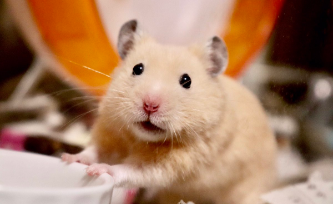
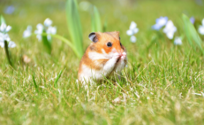
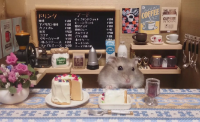

愛鼠鼠是結熱情鼠友力量，進行組織救援、宣導、教育，以永久改善鼠類動物處境為目標。 致力於最前線的動物救援安置，乃至深入問題核心的教育宣導，同時展望動物保護、動物福利相關法令研討。
鼠鼠繁殖能力強大，短時間內會使飼主完全無力負擔，最後只能棄養。鼠承受極大生理、心理痛苦，傳染病、焦慮症、營養不良、身體創傷等。
倉鼠沒有汗腺，而且散熱能力差，一旦氣溫超過28度，即有中暑喪命危險，所以為鼠鼠做好抗暑對策很重要唷！
愛鼠協會收容中心開放參觀！ 報名鼠宅清掃想幫手，請先與我們登記，勿擅自前往，以免撲空。